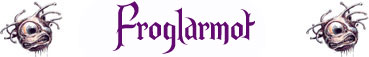

Stretta per Divorare;
Attenzione Superiore;
Camminata Acquatica;

|
|
Ambiente/Habitat | Paludi, Acquitrini e Tunnel Umidi |
| Frequenza | Rara | |
| Organizzazione | Solitario | |
| Periodo di Attività | Qualsiasi | |
| Dieta | Carnivora | |
| Intelligenza | Semi-Intelligent (4) | |
| Punti Combattimento | Nessuno | |
| Tesoro | Occasionale | |
| Allineamento Dominante | Neutrale Malvagio | |
| Numero di Apparizione | 1 | |
| Classe Armatura | 3 [10 base, 6 corazza, 1 destrezza] | |
| Movimento | 6 esagoni | |
| Dadi Vita | 7 (+10 punti ferita) | |
| Thac0 | 13 | |
| Numero di Attacchi | Tentacolo * 4 / Morso | |
| Danni | 1d6 (Botta) * 4 / 1d10+2 (Taglio) | |
| Poteri Offensivi | Istinto Predatorio; Stretta per Divorare; |
|
| Poteri Difensivi | Robustezza
Superiore (+10 punti ferita); Attenzione Superiore; |
|
| Poteri Generici | Mimetizzazione Inferiore; Camminata Acquatica; |
|
| Vulnerabilità | Nessuna; | |
| Resistenza alla Magia | Nessuna; | |
| Sensi | Oscurovisione, Sensi Superiori; | |
| Dimensioni | Large (3 m. altezza) | |
| Morale | Elite (13) | |
| Valore in Punti Esperienza | 1592 |
|
TIRI SALVEZZA DELLA CREATURA |
|||||||
| CORAGGIO | ENERGIA VITALE | MAGIA | MALATTIA | MENTE | RIFLESSI | ROBUSTEZZA | VELENO |
| 0 | 0 | 0 | +10 | 0 | 0 | +5 | +5 |
| 42 | 47 | 57 | 31 | 55 | 49 | 39 | 33 |
Descrizione
X.
Combat
X.
ISTINTO PREDATORIO (Moderate Special Ability): La creatura possiede un forte istinto predatorio, per tale motivo costei riceve un bonus costante di +1 alla Thac0 con i suoi attacchi.
STRETTA PER DIVORARE [TENTACOLO] (Lesser Special Ability): Questa creatura è in grado di utilizzare i propri attacchi per stringere l'avversario e morderlo con ferocia. Qualora, infatti, questa creatura colpisca con almeno due degli attacchi indicati lo stesso avversario, lo terrà stretto e potrà morderlo con incredibile accuratezza. In particolare, l'attacco simultaneo di morso eventualmente effettuato contro il medesimo avversario riceverà un bonus di +4 al tiro per colpire e di +2 al dado base delle ferite.
ROBUSTEZZA SUPERIORE (Typical Ability): Il fisico della creatura è estremamente robusto. Ciò conferisce alla stessa una robustezza superiore che gli garantisce 10 punti ferita supplementari.
ATTENZIONE SUPERIORE (Least Special Ability): E' difficile sorprendere questa creatura. La stessa riceverà un bonus di -1 a qualsiasi tiro per la sorpresa effettuato.
MIMETIZZAZIONE INFERIORE [PALUDI, POZZE, ACQUITRINI] (Lesser Special Ability): Quando la creatura resta ferma è capace di mimetizzarsi nell'ambiente indicato. In particolare, fino a che resta ferma costei non potrà essere notata dalle creature che passino ad una distanza superiore a 30 metri ed otterrà una possibilità pari al 65% di non essere notata dalle creature che le passano ad una distanza inferiore. Utilizzare quest'abilità richiede un'azione complessa dalla durata dell'intero round e la creatura potrà risultare, quindi, nascosta solo alla fine del round. Per restare nascosta la creatura non potrà compiere altre azioni complesse e non potrà spostarsi (si faccia eccezioni per piccoli movimenti effettuati sul posto). Si noti che questa abilità non può essere utilizzata nei confronti di chi ha già visto la creatura fino a che questa non esce dalla sua linea visiva. Si noti che il tiro percentuale è effettuato segretamente dalla creatura un'unica volta ed il suo risultato sarà applicato a qualsiasi soggetto fino a che costei non si sposti od agisca diversamente. Il risultato di questo tiro si considererà incrementato di una penalità del +10% al fine di verificare se la creatura si è nascosta nei confronti di soggetti dotati di Sensi Superiori o che posseggano la competenza Observation ed abbiano superato una prova nella stessa (+15% nei confronti delle creature che abbiano entrambe le caratteristiche). Il risultato del tiro si considererà incrementato di un'ulteriore penalità del +25% al fine di verificare se la creatura si è nascosta nei confronti di soggetti dotati di infravisione (che sia attiva e sempre che la creatura si trovi all'interno del suo raggio). Qualora la creatura risulti nascosta con successo alla vista dei suoi avversari ed agisca improvvisamente costei imporrà loro una penalità di -3 alla relativa prova sulla sorpresa.
CAMMINATA ACQUATICA (Lesser Special Ability): Questa creatura è in grado di spostarsi camminando con il corpo parzialmente immerso nell'acqua riducendo di una classe la penalità al movimento che le sarebbe normalmente applicata. Si noti che quest'abilità non riduce l'eventuale penalità al combattimento prevista per il corpo parzialmente immerso nell'acqua.
Habitat/Society
X.
Ecology
X.
Mystical Resource Sourge
(Occhi) Quantità:
3, Presenza 10% - Scuola di Magia:
Divination
- Qualità della Risorsa: Common.
Mystical Resource Sourge
(Tentacoli) Quantità:
4, Presenza 15% - Scuola di Magia:
Alteration
- Qualità della Risorsa: Common.